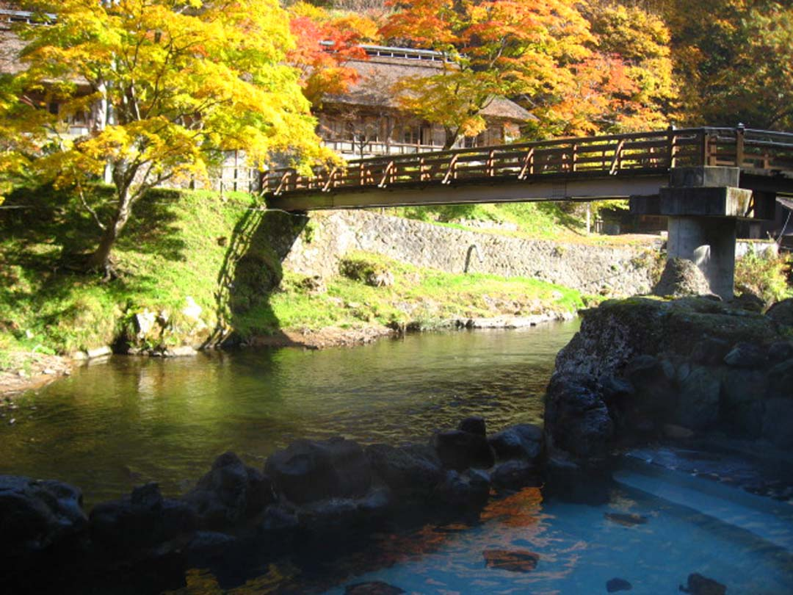

山水閣

駅からのアクセスが良く、周辺に広がる県立自然公園の四季折々の豊かな景色を楽しめ
るのも魅力の一つ。またここ花巻市は縄文時代からの歴史的資料や旧跡も多く、詩人で
童話作家の宮沢賢治のゆかりの地としても、有名である。パワースポット巡りの地とされる
北上山地の早池峰山や白山杉もあり、四季を問わず人気。観光のあとに、温泉で疲れを
癒すことができる。
観光情報
ジャンル
温泉・宿
所在地
岩手県花巻市湯口大沢１８１
電話番号
0198-25-2021
[アクセス経路]
花巻駅 → 【車約18分】温泉
花巻駅 → 【バス約26分】温泉